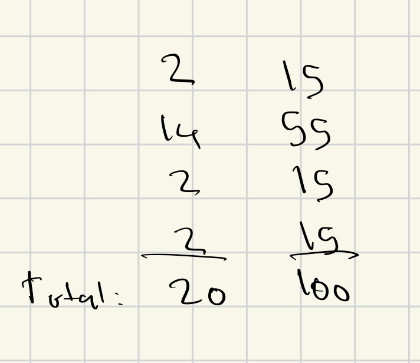

Data science · Software · Visualization
Rishab Kolan
I’m a Data Science student at UC San Diego, building tools that turn data into useful experiences—from personalized music discovery to biosignal-driven gesture recognition.
What I’m working on
At UC San Diego Health, I analyze bacteria and metabolite data to study liver fibrosis. My work combines predictive modeling, feature importance, and data visualization to understand relationships in patient data.
I also built Posterboy, a full-stack application that connects Spotify listening history with personalized album posters and color-based recommendations.
Latest Projects
Loading latest projects…
GitHub activity
Loading GitHub statistics…
Learning through data
This portfolio brings together my projects, experience, and work for DSC 106: Data Visualization.
